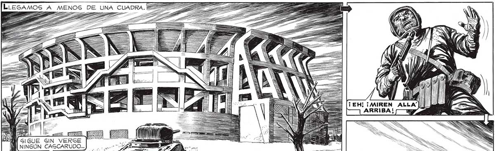

104 A MIR e 6! GUE a VERSE PA NINGÚN CASCARUDO...) —.....D, NO HAY QUE DESCUL DARSE, SIN EMBARGO. ABRAN BIEN LOS Le N (¡ADELANTE TODOS! ¡NO 4 NR HAY QUE DARLES TIEM S PO A APUNTAR EL LAN-] _ ZA ZARRAVOS! 7 Z _L0 ) A] NIZA = NuesTRA POTENCIA DE FUEGO E ERA! MUCHA. EN UN INSTANTE NO QUEDO” NINGUNO. Y Nos LANZAMOS A TODO WCORRER TRAS EL TANQUE. AZ
